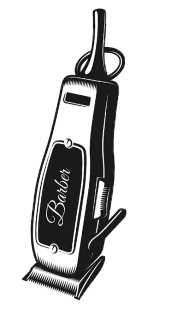

TRANSFORM YOUR BORING LOOK
THE ULTIMATE MEN'S GROOMING EXPERIENCE
A new haircut can completely transform your face putting emphasis on different areas of your facial features. Our private service will beat any doubt.
BOOK NOWClean Cuts, Every Single Time
Every cut starts with a conversation. Before a single snip, we take the time to understand what you want and assess your face shape, hair type, and the style that'll actually suit you — not just the trend of the week. From timeless scissor cuts to sharp skin fades, every finish is tailored to you and executed with care. There's no rushing and no guesswork here; just a clean, considered cut that has you leaving as the best version of yourself, every single visit.

Full Grooming, Done Properl
A great look doesn't stop at the haircut. A well-shaped beard can transform your whole appearance, which is why we treat it with the same precision as everything else — trimming, lining up, and shaping it so it complements your cut rather than fighting it. Whether you're after a crisp, sharp outline or a softer natural finish, we'll get it dialled in. Pair a cut with a beard trim and walk out feeling genuinely put-together, head to chin.

Your Chair, Your Time
This is a single-chair barbershop, and that's by design. No conveyor belt, no crowds, no being passed between barbers — just our full, undivided attention from the moment you sit down. Booking is effortless: reserve your slot online in seconds, choose a time that works for you, and turn up knowing your chair is ready and waiting. Built entirely on word of mouth, we live and die by consistency, which is exactly why our clients keep coming back — and keep bringing their friends.

